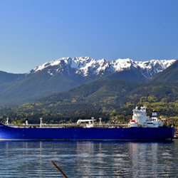

Bob Watt
West Coast is the best coast....
What About Me
West Coaster for the most part but traveled extensively through out the world for work and pleasure.
I'm married with 2 kids , actually teenagers! A boy and a girl 17 and 15 years old. Yes 2 teenagers in the house, (sympathy card played...your welcome).
My wife of 23 years is a professional photographer. So as you could guess, there is no shortage of pictorial documentation of our family life.
My hobbies include but not limited to cooking, playing the drums, fixing up old cars and spending time seeking out and partaking of the craft beer.
for the last 25 years to about 4 months ago my career was based in the maritime industry but now I'm back to square one as a student at Code Fellows.
What I Did
I worked from commercial diving in the Puget Sound to inspecting blue water vessels worldwide. I've flown by helicopter out in the middle of the Gulf of Mexico to inspect tanker ship loads from shore oil rigs to 100 miles off the hawaiian islands to a floating morage. My work has taken me to foreign countries such as Vancouver B.C. Canada, Balao Ecuado, Port Gentil, Gabon Africa to Come By Chance near Nova Scotia Canada.
What I'm looking for now is something I can do from a location of my choice and where I can use creativity in the process!
Work Experience
- Commercial Diver
- Marine Surveyor
- Merchant Marine
- Barge Tankerman
- Marine Vessel Operations
- Marine Fuels Specialist
- Marine Cargo Inspection
Check out the links below to see where I have worked!
Links
Top Ten Drummers I Admire

- John Bonham
- Buddy Rich
- Stewart Copeland
- Neil Peart
- Alex Van Halen
- Keith Moon
- Will Calhoun
- Prince
- Art Blakely
- Billy Higgins